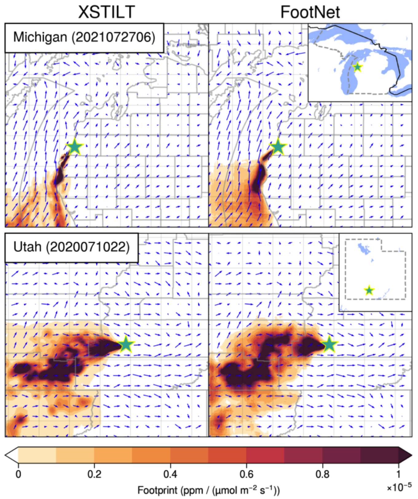

Research Interests
Our research is at the intersection of atmospheric chemistry and the carbon cycle. Specifically, our work aims to quantify the impacts of variations in atmospheric chemistry on the carbon cycle and, conversely, bring insights from the carbon cycle into atmospheric chemistry. The primary tools that we use and develop in our work are: Bayesian inference, machine learning, and satellite remote sensing. Please see below for details on current research areas.
Current Research Areas:
- Sources and sinks of atmospheric methane
- Chemistry-climate feedbacks, variability, and predictability
- High-dimensional inverse problems
Projects, Field Campaigns, Satellite Missions, and Codes:
- FETCH4: Fate, Emissions, and Transport of CH4 in past and modern atmospheres
- FootNet: ML emulator of Lagrangian atmospheric transport
- STRIVE: NASA satellite mission to provide observations from the upper troposphere to the mesosphere
Current Research Areas
Sources and sinks of atmospheric methane (back to top)
Methane is the second most important anthropogenic greenhouse gas after CO2. As a short-lived climate forcing agent (lifetime ~10 years), it provides a lever for slowing near-term climate change. Major anthropogenic sources of methane include oil/gas exploration and use, livestock, landfills, coal mining, and rice cultivation. Wetlands are the dominant natural source. The magnitude and spatial distribution of methane sources is highly uncertain and difficult to constrain.

Figure: Simulated methane concentrations using emissions constrained by satellite observations.
Objectives:
- Improve our understanding of processes governing the variations in atmospheric methane
- Test the utility of space-borne observations for constraining methane emissions
- Identify the drivers of methane changes over the last 2.5 million years
Chemistry-climate feedbacks, variability, and predictability (back to top)
The hydroxyl radical (OH) is the primary oxidant for a number of non-CO2 greenhouse gases and CFCs. It also regulates the production of tropospheric ozone, a leading pollutant. As such, changes in tropospheric OH could have large implications for both future climate and air quality. However we currently lack a predictive understanding of OH on decadal-to-centennial timescales, evidenced by the disagreement between global models in their simulation of OH.

Figure: OH concentrations in a 6000 year equilibrium simulation with a coupled chemistry-climate model.
Objectives:
- Investigate the chemical feedback mechanisms and their timescales in both simple and complex models
- Identify aspects of the chemical system that may be more predictable
- Quantify the importance of the natural feedbacks and oscillations for predictability of greenhouse gas burdens
High-dimensional inverse problems (back to top)
Inverse models quantify the state variables driving the evolution of a physical system by using observations of that system. This requires a physical model that relates a set of input variables (state vector) to a set of output variables (observation vector). Obtaining solutions to high dimensional inverse problems can be computationally expensive or intractable.

Figure: Comparison source-receptor footprints generated by a full-physics model (left) and our FootNet machine learning model (right).
Objectives:
- Develop computationally efficient machine learning models for flux inversions
- Explore different methods of constructing the state vector in an inverse model
- Develop novel methods for estimating greenhouse gas fluxes